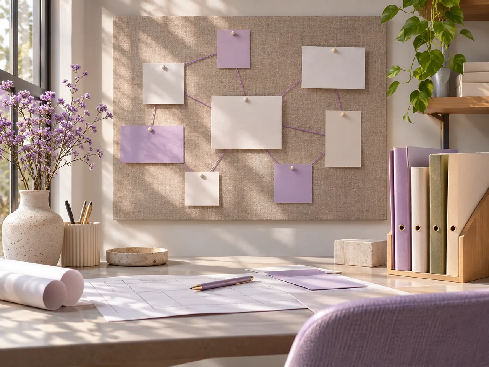

Make states legible
Separate information, current status and next action.
Collaborative design work on interfaces for business management and teamwork.

Toodhu provides tools for business management and collaboration. These experiences need to communicate information, actions, and workflow states clearly.
Business workflows carry actions, information and status together. The design task was to give those elements an understandable structure across related screens. The challenge is a design interpretation, not a measured usability finding.
Separate information, current status and next action.
Use repeatable patterns across related areas.
Keep individual and jointly designed screens aligned.
I worked with a fellow designer on interface hierarchy and reusable patterns, pairing individual contributions with shared review to keep the experience coherent.
Navigate connected work and understand what needs attention.
Recognize recurring controls and information patterns.
A simplified design map of the public or proposed experience, not a recorded user test.
The public website uses a light enterprise presentation. The studio still life is conceptual editorial art; the adjacent capture is from the actual site.

These are design intentions. No measured outcome is implied.
Visually separate status and next action
People need to scan before acting
Clearer task orientation
Repeat meaningful component patterns
Familiar controls reduce re-learning
A more coherent experience
Review alignment across individual work
Multiple contributors should not create visual drift
Consistent product behavior
I contributed individual and shared interface design with another designer. Public website imagery establishes context without assigning all visible features to me.
The public site establishes the product context. This case study does not claim ownership of every feature or a measured business outcome.
With approved product visuals, I could show which interface details were designed individually and which were developed together.